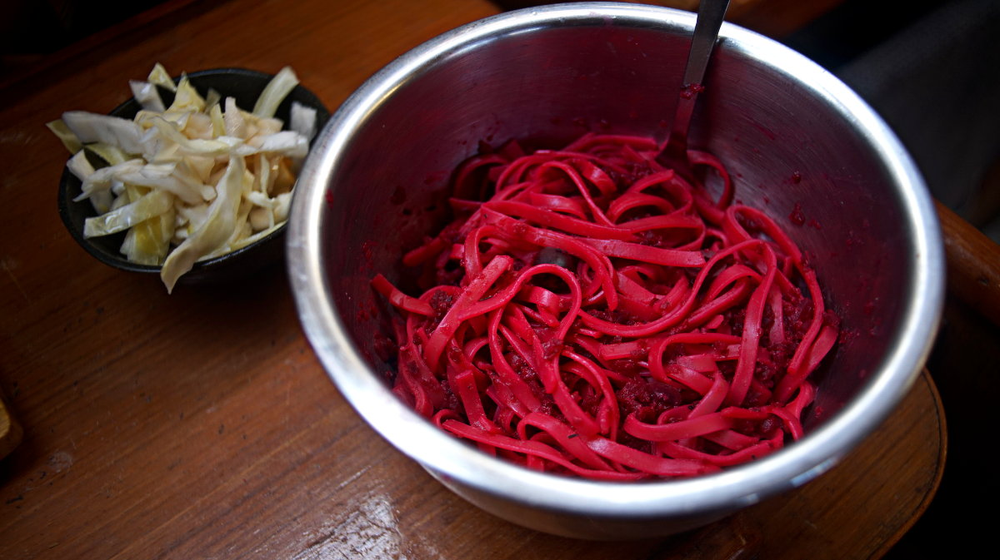

beet sauce pasta
2 servings — 20 minutes
A simple dish that we prepare in the winter time a lot. The sauce we prepare on the boat is very chunky, because we use a small hand-operated grinder(see our model) to process our beets. We only ever run the beets though the grinder once, and the texture, we think, works well enough for a sauce. For those with blenders, it is possible to puree the sauce (if a smooth texture is preferred), but it is not necessary and tastes great as is.
We love how the sauce colors the pasta.
Oven-roasted beets It is also possible to oven-roast the beets for a deeper and more complex flavor. To roast the beets, preheat oven to 200 °C (400 °F). Toss the beet cubes with 5 ml (1 tsp) of olive oil,3 minced cloves of garlic, 2.5 g (1/2 tsp) of dried thyme, 1.25 g (1/4 tsp) of salt and some black pepper. Put chopped red beets on a baking sheet and roast for 30 minutes. Puree into a sauce and continue with the below recipe. Omit thyme and the garlic in the sauce in the below recipe, since it is already mixed with the beets in this version.
Golden beets? It's possible to use golden beets, their flavor profile isn't too different, but they taste a bit sweeter and won't color your noodles or any other ingredient you choose to add into the recipe.
Garlic powder? If using garlic powder instead of fresh garlic, add it the pan along with the pureed beets. Note that 1/8th of a teaspoon of garlic powder equals one fresh garlic clove.
Fresh thyme? If using fresh thyme, add it to the pureed beets, stems and all, but don't forget to remove the stem before serving or blending (if a smooth sauce is desired). Thyme sprigs are a choking hazard.
Milk alternatives. I always have unsweetened soy milk on hand so I use that, it is possible to use unsweetened oat milk, or some full-fat coconut milk (for a richer texture).
 red beets390 g
red beets390 g olive oil15 ml
olive oil15 ml thyme5 g
thyme5 g sea salt1.25 g
sea salt1.25 g black pepper1.25 g
black pepper1.25 g garlic3 cloves
garlic3 cloves vegetable bouillon120 ml
vegetable bouillon120 ml balsamic vinegar15 ml
balsamic vinegar15 ml lemon juice5 ml
lemon juice5 ml nutritional yeast15 g
nutritional yeast15 g soy milk60 ml
soy milk60 ml black olives10
black olives10
sauce
- Peel and cut 390 g (3 medium-sized) red beets into cubes. Using a grinder, or a blender, process the beets until soft. If using a grinder, the beet sauce will remain chunky, but that's okay. Optionally, roast the beets in the oven (see above notes for oven instructions).
- Heat a pan at medium heat, when hot add a splash of olive oil and 3 minced cloves of garlic. Cook for 2 minutes. Add the pureed beets, 2.5 g (1/2 tsp) of dried thyme(if using fresh thyme, use 3 sprigs), 120 ml (1/2 cup) of vegetable stock(optional, but adds flavor. Can sub with water), and cook for 5-10 minutes.
- Stir in 60 ml (1/4 cup) of soy milk, cook for an additional 5 minutes.
- Turn off the heat, and mix in 15 ml (1 tbsp) of balsamic vinegar, 5 ml (1 tsp) lemon juice and a 15 g (~1/4 cup) of nutritional yeast. Season with 1.25 g (1/4 tsp) of salt and some black pepper
- If using thyme sprigs, remove the stems now (the leaves ought to have fallen off during the cooking process). Optionally, purée everything in a blender until smooth, or leave it as is (ours is chunky).
- Cook two portions of the pasta of your choice until tender but firm. Drain and combine with the beet sauce. In this recipe, we used linguini because that's all we had that day, but it is great with penne, fusilli, rotini, farfalle, etc. Serve with a side of sauerkraut, and top with some chopped black olives(or kalamatas).